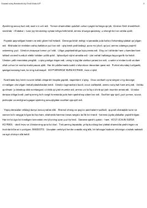

JOTotalitar tuzum va erkinlik uchun kurash haqidagi mashhur distopik roman.
Jorj Oruvellning ushbu mashhur distopik romanida totalitar tuzum, erkinlikning bo'g'ilishi va inson shaxsiyatining yo'q qilinishi tasvirlangan. Bosh qahramon Uinston Smit hukmron partiya va Katta Og'aning nazoratiga qarshi sekin-asta isyon ko'tara boshlaydi. Asar jamiyatdagi siyosiy tazyiq va haqiqatning buzib ko'rsatilishini o'tkir tanqid qiladi.